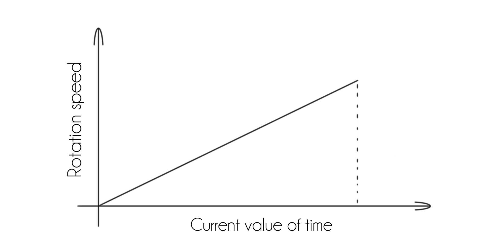

The form of an analog clock is very familiar to all. A circle, a square, or any shape, twelve divisions with five more in them, and forever constant rotating hands to represent time. Once one's learnt how to read it and wonders what's the time, all it takes is to look at a clock to know what time it is. But do we really "know what time it is"?
The information provided by a clock simply signifies the amount of time that has passed since a designated temporal mark we determined. However what exactly "is the time", what precisely is that instant? To my belief, a moment is so much more than the numerical data associated to it. It is everything that is happening in it, everywhere in the universe, like a frameshot of it.
As one could imagine, it clearly is impossible to know what is going on EVERWHERE on the universe, as our minds and capabilitis are so limited. So basically, it would be really hard to know what time it is at a given time (redundancy apart). Having said that, this clock tries in a way to exemplify that very concept.
So "how does it work?" you may be wondering. The idea behind it is to simply change one element of a traditional analog clock: rather than having the current time portrayed by the position of the hands, now the rotation speed of each hand will correspond to its current value. For example, if the current value for seconds is "5" then the seconds hand will be rotating at a "5 rotational speed" to put it in simple words. As its value increases, so will its rotational speed. It will continue like that until it hits its maximum possibe speed, that being 59, and then will suddenly stop (as its value will be 0 and a new minute started). That same concept aplies to the minutes and hours hands.
Having said that, lets go back to the previous idea. Now we know how the clock works but it's very hard to read the current time, and that kind of is the idea behind it. We can directly see how time changes the speed but we're unable to read the clock. The same thing happens with time by itself. It just goes by. We use it in science all the time, it is a common topic in phylosophy, and we have come closer to the concept of what it is and how the world interacts with it, but we will never understand it. We'll never have the full, concise information. Just like in this clock. So good luck reading it!